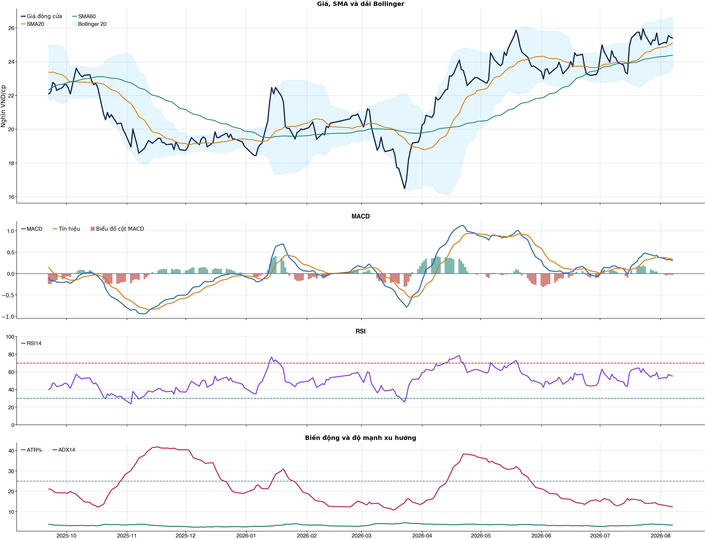
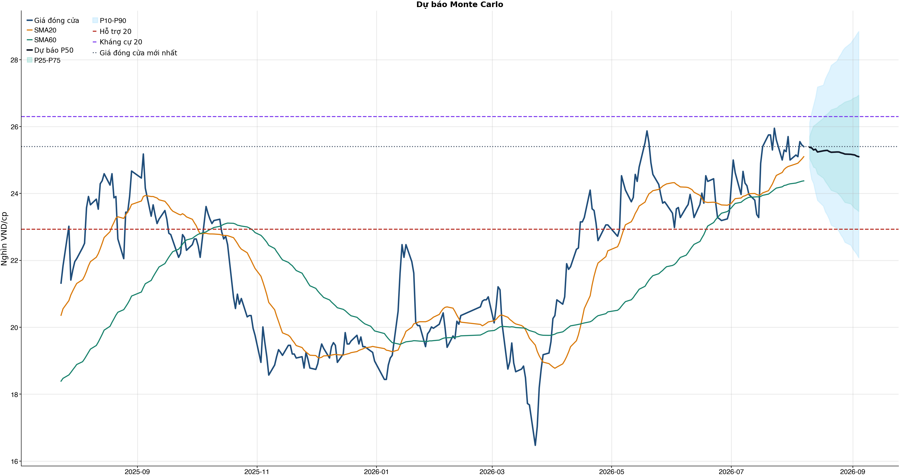
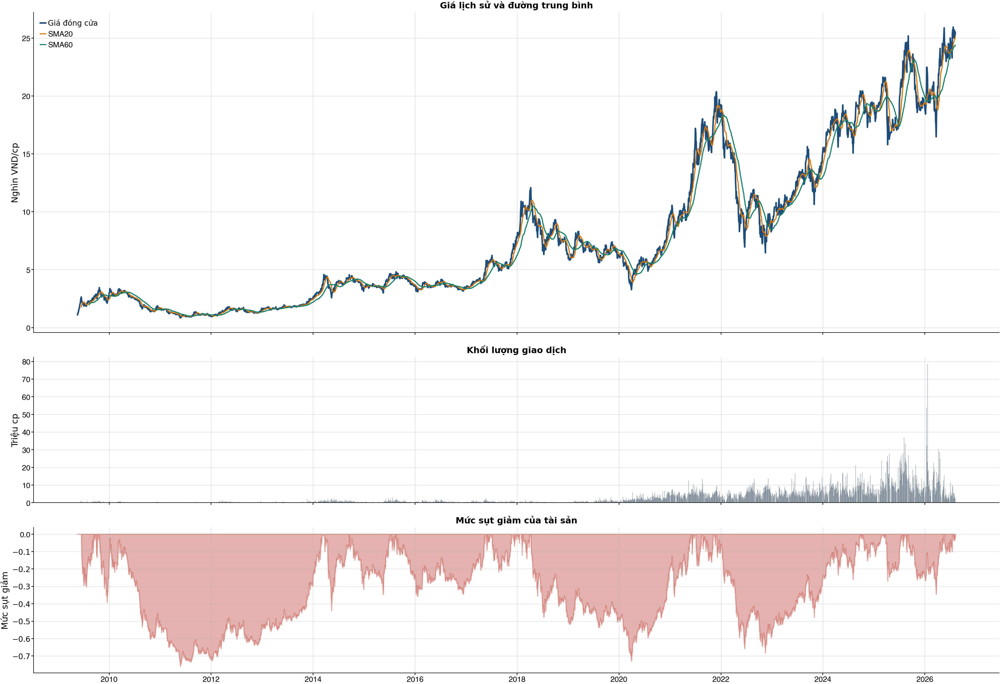

Kết quả chính
Tổng quan cơ bản
Biểu đồ kỹ thuật

Tín hiệu kỹ thuật
| Xu hướng | Tích cực | Giá nằm trên SMA20 và SMA60. |
| MACD | Cẩn thận | MACD dưới signal, histogram âm. |
| RSI14 | Tích cực | RSI 55.2. |
| Bollinger | Ổn định | Giá nằm trong dải Bollinger. |
| ADX | Đi ngang | ADX 12.3. |
| Thanh khoản | Thấp | 0.21 lần trung bình. |
| Stochastic | Yếu lại | %K nằm dưới %D. |
So sánh mô hình
| XGBoost | 0.518 | AUC 0.557 |
| Logistic | 0.519 | AUC 0.564 |
| Đa số | 0.500 | Mốc so sánh |
Kiểm thử chiến lược ngoài mẫu sau chi phí
| Lợi nhuận ròng | -12.6% | 699 quan sát ngoài mẫu |
| Sharpe | -0.34 | Sau chi phí |
| Mức sụt giảm tối đa | -20.4% | 61 vòng giao dịch |
| Chi phí giả định | 50.0 bps | Một vòng mua và bán |
Mức độ quan trọng của đặc trưng
| volatility_20d | 13.23 | Mức đóng góp |
| return_1d | 11.61 | Mức đóng góp |
| macd_pct | 11.47 | Mức đóng góp |
| beta_60d | 10.96 | Mức đóng góp |
| market_return_1d | 10.71 | Mức đóng góp |
| corr_60d | 10.65 | Mức đóng góp |
| close_vs_sma20 | 10.64 | Mức đóng góp |
| relative_strength_20d | 10.54 | Mức đóng góp |
Điều kiện phát hành tín hiệu
| AUC của mô hình | ĐẠT | Điều kiện phát hành tín hiệu |
| Độ chính xác cân bằng của mô hình | KHÔNG ĐẠT | Điều kiện phát hành tín hiệu |
| XGBoost vượt mô hình Logistic đối chứng | KHÔNG ĐẠT | Điều kiện phát hành tín hiệu |
| Xác suất tăng đạt ngưỡng | KHÔNG ĐẠT | Điều kiện phát hành tín hiệu |
| Bối cảnh kỹ thuật đạt ngưỡng | KHÔNG ĐẠT | Điều kiện phát hành tín hiệu |
| Tỷ lệ lợi nhuận/rủi ro đạt ngưỡng | ĐẠT | Điều kiện phát hành tín hiệu |
| Dữ liệu còn mới | ĐẠT | Điều kiện phát hành tín hiệu |
| Có khối lượng vị thế hợp lệ | ĐẠT | Điều kiện phát hành tín hiệu |
| Có kết quả kiểm thử chiến lược ngoài mẫu | ĐẠT | Điều kiện phát hành tín hiệu |
| Mẫu kiểm thử chiến lược đủ lớn | ĐẠT | Điều kiện phát hành tín hiệu |
| Kiểm thử chiến lược có lợi thế ròng | KHÔNG ĐẠT | Điều kiện phát hành tín hiệu |
Quản trị rủi ro
| Rủi ro/lệnh | 1.0% | 1,000,000 VND |
| Mức dừng lỗ | 24.14 | Rủi ro mỗi cổ phiếu 1.39 |
| Mục tiêu 1 | 28.84 | Lợi nhuận/rủi ro 2.38 |
| Mục tiêu 2 | 28.84 | Dự báo/kháng cự |
Phân tích cơ bản
| P/E | 19.30 | 2026-Q2 |
| P/B | 1.98 | 2026-Q2 |
| P/S | 5.96 | 2026-Q2 |
| ROE | 9.8% | 2026-Q2 |
| ROA | 3.1% | 2026-Q2 |
| Gross margin | 38.0% | 2026-Q2 |
| Net margin | 23.0% | 2026-Q2 |
| Debt/Equity | 1.82 | 2026-Q2 |
| Current ratio | 1.54 | 2026-Q2 |
| NPL | 0.0% | 2026-Q2 |
| Dividend yield | 0.0% | 2026-Q2 |
| Market cap | 34,356.1 tỷ | 2026-Q2 |
| Revenue Growth | 15.1% | 2026-Q2 YoY |
| Profit Growth | 42.0% | 2026-Q2 YoY |
| Dòng tiền từ HĐKD | 317.7 tỷ | 2026-Q2 |
| CAPEX | -2.3 tỷ | 2026-Q2 |
| Lợi nhuận sau thuế | 273.2 tỷ | 2026-Q2 |
| Lợi nhuận hoạt động | 340.5 tỷ | 2026-Q2 |
| Tiền và tương đương tiền | 2,202.4 tỷ | 2026-Q2 |
| Vay ngắn hạn | 26,093.2 tỷ | 2026-Q2 |
| Vay dài hạn | 0.0 tỷ | 2026-Q2 |
| Tổng tài sản | 41,258.9 tỷ | 2026-Q2 |
| Tổng nợ phải trả | 26,619.1 tỷ | 2026-Q2 |
| Vốn chủ sở hữu | 14,639.8 tỷ | 2026-Q2 |
| Khoản phải thu | 313.9 tỷ | 2026-Q2 |
| Dòng tiền tự do (CFO - CAPEX) | 315.4 tỷ | 2026-Q2 |
| CFO / Lợi nhuận sau thuế | 1.16 | 2026-Q2 |
| Nợ vay ròng | 23,890.8 tỷ | 2026-Q2 |
| Nợ vay / Vốn chủ sở hữu | 1.78 | 2026-Q2 |
| Phải thu / Tổng tài sản | 0.8% | 2026-Q2 |
Tin tức doanh nghiệp
| Trạng thái | Có dữ liệu | research_only |
| Nguồn / số bài | VCI | 50 |
| Bài đủ timestamp | 50 | Chỉ các bài này mới được phép dùng point-in-time |
| Sentiment 5 ngày | 0.00 | 1.0 bài trước cutoff |
| Phương pháp | keyword_heuristic_v1 | Research only; chưa dùng làm tín hiệu mua/bán |
Dự báo ngắn hạn
| 2026-08-10 | 25.38 | P10 24.78 / P90 26.12 |
| 2026-08-11 | 25.36 | P10 24.43 / P90 26.40 |
| 2026-08-12 | 25.30 | P10 24.30 / P90 26.64 |
| 2026-08-13 | 25.32 | P10 24.03 / P90 26.86 |
| 2026-08-14 | 25.24 | P10 23.79 / P90 27.18 |
| 2026-08-17 | 25.27 | P10 23.62 / P90 27.24 |
| 2026-08-18 | 25.28 | P10 23.45 / P90 27.42 |
| 2026-08-19 | 25.29 | P10 23.36 / P90 27.55 |
Biểu đồ dự báo

Lịch sử giá và mức sụt giảm

Báo cáo dùng để học tập và lập kịch bản, không phải khuyến nghị mua/bán.
Phân tích AI có kiểm chứng
Trạng thái quyết định: NO_EDGE
Tóm tắt: ML decision hiện giữ nguyên NO_EDGE. News Reader đã trích đoạn có nguồn của 3 bài để phân loại chủ đề (ket_qua_kinh_doanh: 1, nganh: 1, rui_ro: 2), nhưng các trích đoạn này không tạo bằng chứng mới cho quyết định đầu tư.
Kỹ thuật: Artifact kỹ thuật: bias Trung tính; điểm 0. Chi tiết artifact: Xu hướng: Tích cực (Giá nằm trên SMA20 và SMA60.); MACD: Cẩn thận (MACD dưới signal, histogram âm.); RSI14: Tích cực (RSI 55.2.); Bollinger: Ổn định (Giá nằm trong dải Bollinger.); ADX: Đi ngang (ADX 12.3.); Thanh khoản: Thấp (0.21 lần trung bình.); Stochastic: Yếu lại (%K nằm dưới %D.)
Cơ bản: Artifact cơ bản: Chứng khoán HSC; kỳ 2026-Q2; P/E 19.30; P/B 1.98; ROE 9.8%; ROA 3.1%; Debt/Equity 1.82; Revenue Growth 15.1%; Profit Growth 42.0%.
Tin tức: Đã đọc trích đoạn giới hạn của 3 bài; phân nhóm rule-based: ket_qua_kinh_doanh: 1, nganh: 1, rui_ro: 2. Tác động cần kiểm chứng: Đối chiếu doanh thu/lợi nhuận trong bài với BCTC và kỳ vọng thị trường. So sánh tín hiệu ngành với thị phần, nhu cầu và đối thủ trước khi suy luận cho riêng doanh nghiệp. Xác minh công bố chính thức, phạm vi ảnh hưởng và khả năng định lượng rủi ro. Đây không phải sentiment hay dự báo tác động giá.
Live research: Live snapshot lấy lúc 2026-08-07T06:28:15.412830+00:00; News Reader đọc được 3 bài. ML có 5 lý do guard và vẫn là NO_EDGE. Không dùng tin live để train/backtest.
Rủi ro cần kiểm chứng
- ML guard: Balanced accuracy 0.518 < 0.520
- ML guard: XGBoost chưa vượt logistic baseline: AUC XGBoost=0.557401586588834, AUC logistic=0.5642535215952369
- ML guard: Probability 47.5% < 55.0%
- ML guard: Technical score 0 < 2
- ML guard: Lợi thế OOS ròng không đạt: return=-0.12580115000000103, Sharpe=-0.3378389084634233
- News Reader: Đối chiếu doanh thu/lợi nhuận trong bài với BCTC và kỳ vọng thị trường.
- News Reader: So sánh tín hiệu ngành với thị phần, nhu cầu và đối thủ trước khi suy luận cho riêng doanh nghiệp.
- News Reader: Xác minh công bố chính thức, phạm vi ảnh hưởng và khả năng định lượng rủi ro.
- Chỉ lưu trích đoạn giới hạn để kiểm chứng nguồn; không lưu hay hiển thị toàn văn bài báo.
- Phân nhóm là keyword rule-based để định tuyến research, không phải sentiment hay dự báo tác động giá.
- Dữ liệu News Reader chỉ phục vụ research/report; không dùng làm feature train/backtest khi chưa có lịch sử available_at point-in-time.
- Tin live/trích đoạn cần mở URL gốc để kiểm chứng bối cảnh, số liệu và thời điểm trước khi sử dụng.
Bằng chứng
- ML decision artifact: NO_EDGE. Balanced accuracy 0.518 < 0.520
- ML decision artifact: NO_EDGE. XGBoost chưa vượt logistic baseline: AUC XGBoost=0.557401586588834, AUC logistic=0.5642535215952369
- ML decision artifact: NO_EDGE. Probability 47.5% < 55.0%
- ML decision artifact: NO_EDGE. Technical score 0 < 2
- ML decision artifact: NO_EDGE. Lợi thế OOS ròng không đạt: return=-0.12580115000000103, Sharpe=-0.3378389084634233
- News Reader [VOV.VN]: 57 mã cổ phiếu không đủ điều kiện giao dịch ký quỹ trên sàn Tp.HCM - VOV.VN | nhóm: rui_ro (2026-08-07T02:20:00+00:00)
- News Reader [24HMoney]: Cổ phiếu MBS, HCM, VCK - Có nên mua? Đánh giá KQKD quý 2 và dự phóng lợi nhuận quý 3 năm 2026 - 24HMoney | nhóm: ket_qua_kinh_doanh, nganh (2026-08-06T06:54:33+00:00)
- News Reader [nguoiquansat.vn]: 5 cổ phiếu hot LPB, ACB, HCM, POW và VNM dưới góc nhìn phân tích kỹ thuật: Mua được không? - nguoiquansat.vn | nhóm: rui_ro (2026-08-03T03:55:01+00:00)
Báo cáo chỉ tổng hợp artifact đã lưu để nghiên cứu; không phải khuyến nghị mua/bán. Quyết định và vị thế vẫn bị khóa theo signal_decision.json.
Tin web đã lấy
| Nguồn | Tiêu đề | Thời điểm | Link |
|---|---|---|---|
| VOV.VN | 57 mã cổ phiếu không đủ điều kiện giao dịch ký quỹ trên sàn Tp.HCM - VOV.VN | 2026-08-07T02:20:00+00:00 | Mở nguồn |
| Vietstock | HCM: Báo cáo kết quả thực hiện quyền mua cổ phiếu của người nội bộ Andrew Colin Vallis - Vietstock | 2026-08-04T10:19:59+00:00 | Mở nguồn |
| 24HMoney | Cổ phiếu MBS, HCM, VCK - Có nên mua? Đánh giá KQKD quý 2 và dự phóng lợi nhuận quý 3 năm 2026 - 24HMoney | 2026-08-06T06:54:33+00:00 | Mở nguồn |
| CafeF | Giá cổ phiếu lao dốc, nhà đầu tư 'bắt đáy' cẩn trọng - CafeF | 2026-08-01T03:30:00+00:00 | Mở nguồn |
| nguoiquansat.vn | 5 cổ phiếu hot LPB, ACB, HCM, POW và VNM dưới góc nhìn phân tích kỹ thuật: Mua được không? - nguoiquansat.vn | 2026-08-03T03:55:01+00:00 | Mở nguồn |
| Tin nhanh chứng khoán | Nhìn lại diễn biến nhóm cổ phiếu được các công ty chứng khoán khuyến nghị tuần qua - Tin nhanh chứng khoán | 2026-07-31T10:12:43+00:00 | Mở nguồn |
| 24HMoney | 5 cổ phiếu LPB, ACB, HCM, POW và VNM đang ở vùng nào: Có nên xuống tiền lúc này? - 24HMoney | 2026-08-03T04:24:28+00:00 | Mở nguồn |
| Tin tức 24h | Ông lớn hạ tầng TP HCM lãi hơn 100 tỷ khi 'bắt đáy' cổ phiếu PC1 - Tin tức 24h | 2026-07-31T08:28:47+00:00 | Mở nguồn |
| SkyDoor News | Ông lớn hạ tầng TP HCM lãi hơn 100 tỷ khi “bắt đáy“ cổ phiếu PC1 - SkyDoor News | 2026-07-31T08:30:00+00:00 | Mở nguồn |
News Reader: bài đã đọc và trích đoạn
| Nguồn | Tiêu đề | Nhóm | Thời điểm | Trích đoạn đã đọc | Link |
|---|---|---|---|---|---|
| VOV.VN | 57 mã cổ phiếu không đủ điều kiện giao dịch ký quỹ trên sàn Tp.HCM - VOV.VN | rui_ro | 2026-08-07T02:20:00+00:00 | Xem trích đoạnTheo danh sách mới, số lượng cổ phiếu và chứng chỉ quỹ không đủ điều kiện cấp margin đã giảm từ 59 xuống còn 57 mã. Theo danh sách mới, nhóm cổ phiếu thuộc diện cảnh báo tiếp tục chiếm tỷ trọng lớn nhất với 29 mã, tương đương hơn một nửa tổng số chứng khoán không đủ điều kiện giao dịch ký quỹ. - 57 mã cổ phiếu không đủ điều kiện giao dịch ký quỹ trên sàn Tp.HCM - Cần hiểu đúng quy định chung cư có "thời hạn sử dụng" - Phiên giao dịch chứng khoán hôm qua, thị trường chìm trong sắc | Mở nguồn |
| 24HMoney | Cổ phiếu MBS, HCM, VCK - Có nên mua? Đánh giá KQKD quý 2 và dự phóng lợi nhuận quý 3 năm 2026 - 24HMoney | ket_qua_kinh_doanh, nganh | 2026-08-06T06:54:33+00:00 | Xem trích đoạnNhóm chứng khoán MBS , HCM , VCK sau quý 2/2026 ghi nhận lợi nhuận phân hóa trước thách thức từ thị trường. Bài viết phân tích kết quả kinh doanh, dự báo lợi nhuận quý 3 và đưa ra câu hỏi liệu có nên đầu tư vào cổ phiếu này hay không. Kết thúc quý 2/2026, nhóm ngành chứng khoán ghi nhận sự phân hóa rõ rệt về lợi nhuận khi thanh khoản thị trường liên tục biến động và thị phần môi giới có sự dịch chuyển mạnh mẽ. Trong bối cảnh dư nợ cho vay margin toàn thị trường tiến sát vùng đỉnh lịch sử, các công ty chứng khoán thuộc top đầu như MBS, HCM và VCK (Chứng khoán VPS) đang đứng trước những cơ hội lẫn thách thức lớn. Bức tranh tài chính quý 2 phản ánh điều gì về sức khỏe doanh nghiệp và động lực tăng trưởng nào sẽ dẫn dắt nhóm chứng khoán trong quý 3 - quý 4 của năm 2026? Những câu hỏi mà nhiều A/C/E nhà đầu tư đang quan tâm là: - Kết quả kinh doanh quý 2/2026 của MBS, HCM và VCK có điểm gì ở mảng môi giới và cho vay margin? - Dự phóng triển vọng lợi nhuận quý 3/2026 của nhóm chứng khoán ra sao? - Có nên mua cổ phiếu MBS, HCM, VCK ở thời điểm hiện tại và vùng giá nào là an toàn? Tất cả câu hỏi "hóc búa" đó được Tín Phong giải đáp chi tiết và dễ hiểu trong video này! Số giấy phép mạng xã hội: 203/GP-BTTTT do BỘ TT & TT cấp ngày | Mở nguồn |
| nguoiquansat.vn | 5 cổ phiếu hot LPB, ACB, HCM, POW và VNM dưới góc nhìn phân tích kỹ thuật: Mua được không? - nguoiquansat.vn | rui_ro | 2026-08-03T03:55:01+00:00 | Xem trích đoạnTrong khi nhiều cổ phiếu chịu áp lực điều chỉnh mạnh, LPB và HCM lại cho thấy diễn biến đáng chú ý khi vẫn giữ được nền giá, gần như đứng ngoài nhịp rung lắc của thị trường và đang tích lũy, chờ tín hiệu bứt phá vùng đỉnh cũ. Trong báo cáo chiến lược các tháng cuối năm 2026, Chứng khoán Agribank (Agriseco Research) cho rằng sau giai đoạn điều chỉnh mạnh, thị trường chứng khoán Việt Nam đang bước vào nhịp hồi phục ngắn hạn. Tuy nhiên, bối cảnh hiện tại vẫn tiềm ẩn nhiều biến động khi rủi ro "bulltrap" còn hiện hữu và mức độ phân hóa giữa các nhóm cổ phiếu ngày càng lớn. Theo đơn vị phân tích, dù thị trường đã xuất hiện tín hiệu hồi phục nhưng cơ hội không phân bổ đồng đều. Thống kê của công ty cho thấy toàn thị trường có hơn 1.600 cổ phiếu trên ba sàn, song chỉ khoảng 38,6% giữ được đà tăng giá, 5,7% đạt thanh khoản trên 1 triệu cổ phiếu/phiên và chỉ 2,2% hội tụ đầy đủ các tiêu chí để đưa vào danh mục lựa chọn. Agriseco nhấn mạnh ba nguyên tắc quan trọng trong chiến lược giao dịch hiện nay. Thứ nhất, ưu tiên tối ưu hóa hiệu quả đầu tư, tập trung vào các cổ phiếu có xác suất hồi phục cao thay vì cố gắng bắt toàn bộ nhịp tăng của thị trường. Thứ hai, duy trì tỷ trọng hợp lý, chỉ gia tăng tỷ lệ cổ phiếu khi chỉ số vượt các ngưỡng kỹ thuật quan trọng và xác nhận xu hướng tích cực. Thứ ba, kỷ luật tuyệt đối, chủ động hạ tỷ trọng trong các nhịp tăng mạnh và cắt lỗ dứt khoát khi cổ phiếu vi phạm các vùng hỗ trợ. Từ bộ tiêu chí về sức mạnh giá, xu hướng tăng trung hạn, thanh khoản ổn định và sự dịch chuyển của dòng tiền, Agriseco lựa chọn 5 cổ phiếu gồm LPB , ACB, HCM, POW và VNM. LPB: Đặt cược vào khả năng bứt phá vùng đỉnh lịch sử Theo Agriseco, LPB đang duy trì xu hướng tăng và đã thiết lập đỉnh lịch sử mới trong quý II/2026, trái ngược với diễn biến chung của nhóm ngân hàng. Cổ phiếu hiện tích lũy trong biên độ hẹp với thanh khoản suy giảm, cho thấy áp lực bán không lớn. Vùng hỗ trợ gần được xác định tại 50.000 đồng/cp, trong khi vùng hỗ trợ mạnh nằm trong khoảng 44.000-45.000 đồng/cp. Nếu vượt vùng 54.000-56.500 đồng/cp với thanh khoản được cải thiện, LPB có thể hướng tới mục tiêu 58.500 đồng/cp, xa hơn là vùng 61.000-63.000 đồng/cp. Agriseco khuyến nghị nhà đầu tư có thể mở vị thế mua mới quanh vùng 49.500-51.000 đồng/cp, đồng thời tránh mua đuổi khi giá tiến sát vùng 55.000-56.500 đồng/cp. Xu hướng tăng ngắn hạn sẽ suy yếu nếu LPB đóng cửa tuần dưới 48.000 | Mở nguồn |
Chi tiết báo cáo tài chính
Kết quả kinh doanh — 4 kỳ gần nhất
Hiển thị 35 dòng đầu; mở CSV đầy đủ.
| Khoản mục | 2026-Q2 | 2026-Q1 | 2025-Q4 | 2025-Q3 |
|---|---|---|---|---|
| DOANH THU HOẠT ĐỘNG | 1,235.4 tỷ | 1,466.4 tỷ | 1,398.2 tỷ | 1,664.9 tỷ |
| Các khoản giảm trừ doanh thu | 0.0 tỷ | 0.0 tỷ | 0.0 tỷ | 0.0 tỷ |
| Doanh thu thuần về hoạt động kinh doanh | 1,235.4 tỷ | 1,466.4 tỷ | 1,398.2 tỷ | 1,664.9 tỷ |
| CHI PHÍ HOẠT ĐỘNG | -776.0 tỷ | -976.9 tỷ | -850.1 tỷ | -973.7 tỷ |
| LỢI NHUẬN GỘP | 459.4 tỷ | 489.5 tỷ | 548.2 tỷ | 691.2 tỷ |
| CHI PHÍ QUẢN LÝ CÔNG TY CHỨNG KHOÁN | -119.1 tỷ | -127.4 tỷ | -147.2 tỷ | -141.5 tỷ |
| KẾT QUẢ HOẠT ĐỘNG | 340.5 tỷ | 363.3 tỷ | 401.5 tỷ | 549.9 tỷ |
| CHI PHÍ THUẾ THU NHẬP DOANH NGHIỆP | 340.5 tỷ | 363.4 tỷ | 401.5 tỷ | 550.0 tỷ |
| Chi phí thuế thu nhập hiện hành | -67.3 tỷ | -72.6 tỷ | -82.1 tỷ | -109.4 tỷ |
| Chi phí thuế thu nhập hoãn lại | 0.0 tỷ | 0.0 tỷ | -0.4 tỷ | 0.0 tỷ |
| LỢI NHUẬN KẾ TOÁN SAU THUẾ | 273.2 tỷ | 290.7 tỷ | 319.0 tỷ | 440.5 tỷ |
| Lợi nhuận thuần phân bổ cho lợi ích của cổ đông không kiểm soát | 0.0 tỷ | 0.0 tỷ | 0.0 tỷ | 0.0 tỷ |
| Lợi nhuận sau thuế phân bổ cho chủ sở hữu | 273.2 tỷ | 290.7 tỷ | 319.0 tỷ | 440.5 tỷ |
| Lãi cơ bản trên cổ phiếu (VND) | 0.0 tỷ | 0.0 tỷ | 0.0 tỷ | 0.0 tỷ |
| Lãi trên cổ phiếu pha loãng (VND) | 0.0 tỷ | 0.0 tỷ | 0.0 tỷ | 0.0 tỷ |
| Doanh thu nghiệp vụ môi giới chứng khoán | 196.7 tỷ | 324.3 tỷ | 285.4 tỷ | 506.7 tỷ |
| Doanh thu hoạt động đầu tư chứng khoán, góp vốn (Trước năm 2016) | 0.0 tỷ | 0.0 tỷ | 0.0 tỷ | 0.0 tỷ |
| Doanh thu nghiệp vụ bảo lãnh phát hành chứng khoán | 0.0 tỷ | 0.0 tỷ | 0.0 tỷ | 0.0 tỷ |
| Doanh thu nghiệp vụ tư vấn đầu tư chứng khoán | 0.0 tỷ | 0.0 tỷ | 0.0 tỷ | 0.0 tỷ |
| Doanh thu lưu ký chứng khoán | 4.0 tỷ | 3.9 tỷ | 3.8 tỷ | 3.7 tỷ |
| Doanh thu hoạt động ủy thác, đấu giá (Trước năm 2016) | 0.0 tỷ | 0.0 tỷ | 0.0 tỷ | 0.0 tỷ |
| Thu cho thuê sử dụng tài sản (Trước năm 2016) | 0.0 tỷ | 0.0 tỷ | 0.0 tỷ | 0.0 tỷ |
| Doanh thu khác | 9.2 tỷ | 9.6 tỷ | 18.4 tỷ | 8.9 tỷ |
| Lãi/lỗ từ công ty liên doanh, liên kết | 0.0 tỷ | 0.0 tỷ | 0.0 tỷ | 0.0 tỷ |
| Lãi từ các tài sản tài chính ghi nhận thông qua lãi/lỗ ( FVTPL) | 244.4 tỷ | 359.2 tỷ | 346.7 tỷ | 502.5 tỷ |
| Lãi bán các tài sản tài chính FVTPL | 109.6 tỷ | 267.0 tỷ | 116.6 tỷ | 282.6 tỷ |
| Chênh lệch tăng đánh giá lại các TSTC thông qua lãi/lỗ | -218.0 tỷ | 37.6 tỷ | 112.9 tỷ | -26.4 tỷ |
| Cổ tức, tiền lãi phát sinh từ tài sản tài chính FVTPL | 352.8 tỷ | 54.6 tỷ | 117.2 tỷ | 246.3 tỷ |
| Lãi từ các khoản đầu tư nắm giữ đến ngày đáo hạn | 8.7 tỷ | 0.0 tỷ | 0.0 tỷ | 0.0 tỷ |
| Lãi từ các khoản cho vay và phải thu | 766.0 tỷ | 765.3 tỷ | 731.5 tỷ | 641.6 tỷ |
| Lãi từ các tài sản tài chính sẵn sàng để bán | 0.0 tỷ | 0.0 tỷ | 0.0 tỷ | 0.0 tỷ |
| Lãi từ các công cụ phát sinh phòng ngừa rủi ro | 0.0 tỷ | 0.0 tỷ | 0.0 tỷ | 0.0 tỷ |
| Doanh thu hoạt động tư vấn tài chính | 6.5 tỷ | 4.1 tỷ | 12.4 tỷ | 1.6 tỷ |
| Lỗ các tài sản tài chính ghi nhận thông qua lãi lỗ (FVTPL) | -63.5 tỷ | -187.3 tỷ | -130.5 tỷ | -276.2 tỷ |
| Lỗ bán các tài sản tài chính | -59.1 tỷ | -236.5 tỷ | -146.8 tỷ | -217.0 tỷ |
Bảng cân đối kế toán — 4 kỳ gần nhất
Hiển thị 35 dòng đầu; mở CSV đầy đủ.
| Khoản mục | 2026-Q2 | 2026-Q1 | 2025-Q4 | 2025-Q3 |
|---|---|---|---|---|
| TÀI SẢN NGẮN HẠN | 41,094.1 tỷ | 40,295.3 tỷ | 46,331.3 tỷ | 44,591.0 tỷ |
| Tiền và tương đương tiền | 2,202.4 tỷ | 1,209.0 tỷ | 3,701.6 tỷ | 6,709.1 tỷ |
| Tiền | 2,202.4 tỷ | 1,209.0 tỷ | 3,701.6 tỷ | 6,709.1 tỷ |
| Các khoản tương đương tiền | 0.0 tỷ | 0.0 tỷ | 0.0 tỷ | 0.0 tỷ |
| Các tài sản tài chính ghi nhận thông qua lãi lỗ (FVTPL) | 9,132.8 tỷ | 10,109.3 tỷ | 13,766.1 tỷ | 16,044.2 tỷ |
| Dự phòng suy giảm giá trị tài sản tài chính và tài sản thế chấp | 0.0 tỷ | 0.0 tỷ | 0.0 tỷ | 0.0 tỷ |
| Tổng các khoản phải thu | 313.9 tỷ | 781.6 tỷ | 655.8 tỷ | 1,254.0 tỷ |
| Phải thu khách hàng (Trước năm 2016) | 0.0 tỷ | 0.0 tỷ | 0.0 tỷ | 0.0 tỷ |
| Trả trước người bán | 7.4 tỷ | 6.5 tỷ | 16.6 tỷ | 10.1 tỷ |
| Phải thu nội bộ | 0.0 tỷ | 0.0 tỷ | 0.0 tỷ | 0.0 tỷ |
| Phải thu về XDCB (Trước năm 2016) | 0.0 tỷ | 0.0 tỷ | 0.0 tỷ | 0.0 tỷ |
| Phải thu khác | 132.3 tỷ | 128.1 tỷ | 104.5 tỷ | 224.7 tỷ |
| Dự phòng nợ khó đòi (Trước năm 2016) | 0.0 tỷ | 0.0 tỷ | 0.0 tỷ | 0.0 tỷ |
| Hàng tồn kho, ròng (Trước năm 2016) | 0.0 tỷ | 0.0 tỷ | 0.0 tỷ | 0.0 tỷ |
| Hàng tồn kho (Trước năm 2016) | 0.0 tỷ | 0.0 tỷ | 0.0 tỷ | 0.0 tỷ |
| Dự phòng giảm giá HTK (Trước năm 2016) | 0.0 tỷ | 0.0 tỷ | 0.0 tỷ | 0.0 tỷ |
| Tài sản ngắn hạn khác | 39.9 tỷ | 55.0 tỷ | 57.7 tỷ | 368.0 tỷ |
| Chi phí trả trước ngắn hạn | 29.1 tỷ | 27.9 tỷ | 29.7 tỷ | 26.7 tỷ |
| Thuế giá trị gia tăng được khấu trừ | 0.0 tỷ | 0.0 tỷ | 0.0 tỷ | 0.0 tỷ |
| Thuế và các khoản khác phải thu Nhà nước | 0.0 tỷ | 0.0 tỷ | 0.0 tỷ | 0.0 tỷ |
| Tài sản ngắn hạn khác | 8.1 tỷ | 23.8 tỷ | 24.9 tỷ | 333.6 tỷ |
| TÀI SẢN DÀI HẠN | 164.8 tỷ | 171.5 tỷ | 167.7 tỷ | 171.1 tỷ |
| Phải thu dài hạn | 0.0 tỷ | 0.0 tỷ | 0.0 tỷ | 0.0 tỷ |
| Phải thu khách hàng dài hạn | 0.0 tỷ | 0.0 tỷ | 0.0 tỷ | 0.0 tỷ |
| Phải thu nội bộ dài hạn (Trước năm 2016) | 0.0 tỷ | 0.0 tỷ | 0.0 tỷ | 0.0 tỷ |
| Phải thu dài hạn khác (Trước năm 2016) | 0.0 tỷ | 0.0 tỷ | 0.0 tỷ | 0.0 tỷ |
| Dự phòng phải thu dài hạn (Trước năm 2016) | 0.0 tỷ | 0.0 tỷ | 0.0 tỷ | 0.0 tỷ |
| Tài sản cố định | 30.9 tỷ | 33.4 tỷ | 35.7 tỷ | 34.8 tỷ |
| GTCL TSCĐ hữu hình | 26.9 tỷ | 29.4 tỷ | 31.1 tỷ | 31.3 tỷ |
| Nguyên giá TSCĐ hữu hình | 215.7 tỷ | 213.9 tỷ | 210.9 tỷ | 205.9 tỷ |
| Khấu hao lũy kế TSCĐ hữu hình | -188.8 tỷ | -184.5 tỷ | -179.7 tỷ | -174.6 tỷ |
| GTCL Tài sản thuê tài chính | 0.0 tỷ | 0.0 tỷ | 0.0 tỷ | 0.0 tỷ |
| Nguyên giá tài sản thuê tài chính | 0.0 tỷ | 0.0 tỷ | 0.0 tỷ | 0.0 tỷ |
| Khấu hao lũy kế tài sản thuê tài chính | 0.0 tỷ | 0.0 tỷ | 0.0 tỷ | 0.0 tỷ |
| GTCL tài sản cố định vô hình | 4.0 tỷ | 4.0 tỷ | 4.5 tỷ | 3.5 tỷ |
Lưu chuyển tiền tệ — 4 kỳ gần nhất
Hiển thị 35 dòng đầu; mở CSV đầy đủ.
| Khoản mục | 2026-Q2 | 2026-Q1 | 2025-Q4 | 2025-Q3 |
|---|---|---|---|---|
| LỢI NHUẬN TRƯỚC THUẾ | 340.5 tỷ | 363.4 tỷ | 401.5 tỷ | 550.0 tỷ |
| Khấu hao tài sản cố định | 4.9 tỷ | 5.2 tỷ | 5.7 tỷ | 6.1 tỷ |
| Các khoản dự phòng | 0.0 tỷ | 0.0 tỷ | 0.0 tỷ | 0.0 tỷ |
| Lãi, lỗ chênh lệch tỷ giá hối đoái chưa thực hiện | 0.0 tỷ | 0.0 tỷ | 0.0 tỷ | 0.0 tỷ |
| Lãi, lỗ hoạt động đầu tư | 0.0 tỷ | 0.0 tỷ | 0.0 tỷ | -0.0 tỷ |
| Chi phí lãi vay | 509.6 tỷ | 522.0 tỷ | 470.7 tỷ | 391.3 tỷ |
| Dự thu lãi và cổ tức | -2.9 tỷ | -125.3 tỷ | -2.1 tỷ | -14.1 tỷ |
| Lợi nhuận từ hoạt động kinh doanh trước thay đổi vốn lưu động | -436.3 tỷ | 2,737.8 tỷ | -8,375.9 tỷ | -1,055.8 tỷ |
| (-) Tăng, (+) giảm các khoản phải thu khác | -0.6 tỷ | 101.5 tỷ | 127.0 tỷ | -125.7 tỷ |
| Tăng/giảm hàng tồn kho (Trước năm 2016) | 0.0 tỷ | 0.0 tỷ | 0.0 tỷ | 0.0 tỷ |
| (+) Tăng, (-) giảm các khoản phải trả, phải nộp khác | -197.8 tỷ | -151.2 tỷ | -3,356.6 tỷ | 3,702.4 tỷ |
| Tăng/giảm chi phí trả trước | 2.9 tỷ | -4.1 tỷ | 2.2 tỷ | -18.0 tỷ |
| Tiền lãi vay đã trả | -499.3 tỷ | -532.9 tỷ | -437.8 tỷ | -380.4 tỷ |
| Thuế TNDN CTCK đã nộp | -72.6 tỷ | -186.5 tỷ | -5.0 tỷ | -47.4 tỷ |
| Tiền thu khác từ hoạt động kinh doanh | 15.8 tỷ | 1.1 tỷ | 176.6 tỷ | -197.4 tỷ |
| Tiền chi khác cho hoạt động kinh doanh | -0.1 tỷ | -0.0 tỷ | 131.9 tỷ | -131.3 tỷ |
| Lưu chuyển thuần từ hoạt động kinh doanh | 317.7 tỷ | 3,416.3 tỷ | -7,629.3 tỷ | -107.4 tỷ |
| Tiền chi để mua sắm, xây dựng TSCĐ, BĐSĐT và các tài sản dài hạn khác | -2.3 tỷ | -3.0 tỷ | -7.7 tỷ | -1.3 tỷ |
| Tiền thu từ thanh lý, nhượng bán TSCĐ, BĐSĐT và các tài sản dài hạn khác | 0.0 tỷ | 0.0 tỷ | 0.0 tỷ | 0.0 tỷ |
| Tiền chi cho vay, mua các công cụ nợ của đơn vị khác (Trước năm 2016) | 0.0 tỷ | 0.0 tỷ | 0.0 tỷ | 0.0 tỷ |
| Tiền thu hồi cho vay, bán lại các công cụ nợ của đơn vị khác (Trước năm 2016) | 0.0 tỷ | 0.0 tỷ | 0.0 tỷ | 0.0 tỷ |
| Tiền chi đầu tư góp vốn vào công ty con, công ty liên doanh, liên kết và đầu tư khác | 0.0 tỷ | 0.0 tỷ | 0.0 tỷ | 0.0 tỷ |
| Tiền thu hồi các khoản đầu tư góp vốn vào công ty con, công ty liên doanh, liên kết và đầu tư khác | 0.0 tỷ | 0.0 tỷ | 0.0 tỷ | 0.0 tỷ |
| Tiền thu về cổ tức lợi nhuận được chia từ các khoản đầu tư tài chính dài hạn | 0.0 tỷ | 0.0 tỷ | 0.0 tỷ | 0.0 tỷ |
| Lưu chuyển tiền thuần từ hoạt động đầu tư | -2.3 tỷ | -3.0 tỷ | -7.7 tỷ | -1.3 tỷ |
| Tiền thu từ phát hành cổ phiếu, nhận vốn góp của chủ sở hữu | 0.0 tỷ | 0.0 tỷ | 3,599.7 tỷ | 0.0 tỷ |
| Tiền chi trả vốn góp cho các chủ sở hữu, mua lại cổ phiếu của doanh nghiệp đã phát hành | 0.0 tỷ | 0.0 tỷ | 0.0 tỷ | 0.0 tỷ |
| Tiền vay gốc | 48,130.8 tỷ | 61,187.9 tỷ | 54,473.5 tỷ | 64,044.3 tỷ |
| Tiền chi trả nợ gốc vay | -47,452.8 tỷ | -66,661.8 tỷ | -53,443.7 tỷ | -58,536.1 tỷ |
| Tiền chi trả nợ thuê tài chính | 0.0 tỷ | 0.0 tỷ | 0.0 tỷ | 0.0 tỷ |
| Cổ tức, lợi nhuận đã trả cho chủ sở hữu | 0.0 tỷ | -432.0 tỷ | 0.0 tỷ | 0.0 tỷ |
| Lưu chuyển thuần từ hoạt động tài chính | 678.0 tỷ | -5,905.9 tỷ | 4,629.5 tỷ | 5,508.2 tỷ |
| LƯU CHUYỂN TIỀN THUẦN TRONG KỲ | 993.4 tỷ | -2,492.6 tỷ | -3,007.5 tỷ | 5,399.6 tỷ |
| TIỀN VÀ CÁC KHOẢN TƯƠNG ĐƯƠNG TIỀN ĐẦU KỲ | 1,209.0 tỷ | 3,701.6 tỷ | 6,709.1 tỷ | 1,309.5 tỷ |
| Ảnh hưởng của thay đổi tỷ giá hối đoái quy đổi ngoại tệ | 0.0 tỷ | 0.0 tỷ | 0.0 tỷ | 0.0 tỷ |